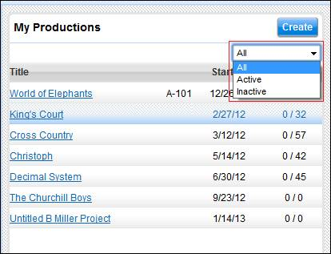
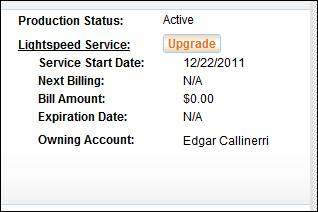

The Production List
allows you to view and manage a slate of productions. Productions may be created, archived, and
deleted. As a production goes through a
typical lifecycle - creation, use, archival, and (optional) deletion - its
status in the Production List changes.
Productions in the Production List are either Active or Inactive. Active productions are those actively in prep or production where cast and crew members may enter the production to view, add, or change information. Inactive productions are those that have either been archived or have cancelled their subscription and reached their expiration date. Inactive productions are placed in Read-Only mode. In the case of an expired subscription, the production is only accessible to the production owner and administrators.
The table below illustrates what determines if a production is Active or Inactive.
Production Status Table
|
|
ACTIVE |
INACTIVE |
|
Production: |
|
|
|
Subscribed or Free Trial |
|
|
|
Unsubscribed & Not Expired |
|
|
|
Unsubscribed & Expired |
|
|
|
Archived |
|
By default the Production List displays all of the productions with which you are associated. Use the dropdown menu located below the Create button to filter your list based on their Active or Inactive status.
Production Filter Dropdown

Click on the Create
button above the Production List to create a production. You will be directed to a list of the various types of productions that you can create. Some productions, such as free trials and
indies, may be selected and begun immediately.
Others require you to contact us so that we may customize the parameters
of the production. Student productions
require student ID verification.
When you create a production you
are asked to provide a title. If you do
not have a title for your production yet, you may use a working title or even
the word "Untitled".
Note: The person who
creates a production is considered the Production
Owner of the production and is given, by default, the roles of Production
Data Administrator and Financial Data Administrator.
Each production must have at least
one Production Data Administrator, and may add up to a total of five Production
Data Administrators. Production Data
Administrators have a great deal of control within the production and may
invite others, edit production data, and archive the production entirely. When a production's subscription expires,
only Production Data Administrators are able to access the production.
Each production must have at least
one Financial Data Administrator. Financial Data Administrators are responsible
for the financial and payroll data in the system and may grant other users
access to this financial information. Financial information includes timecards,
start forms, and payroll reports.
Subscribe to a production by selecting a production type from the Lightspeed production list. There are two main types of productions:
· Feature Film
A feature film production is designed for a single production of any size. The cast, crew, and list of production elements is unique and not shared with any other production.
· TV/Episodic
An episodic production supports multiple projects, or episodes, within a larger production. While each episode contains its own script revisions, elements, schedule, and reports, the cast, crew, and locations may be shared among all of the episodes.
Paid productions are either monthly recurring subscriptions, which have no set expiration date, or fixed term subscriptions, which do. A monthly subscription is renewed automatically until the production owner cancels the subscription. Fixed term subscriptions may be extended at any time.
You may end a monthly subscription of a production for which you are the production owner.
Select the Unsubscribe button on the right side of the screen below the production details area. Once a subscription is cancelled, an expiration date is computed based on the remainder of time in the current month's subscription. The production remains Active through that expiration date.
You may renew a subscription that was previously cancelled.
Select the Resubscribe button on the right side of the screen below the production details area. You will be prompted to confirm your renewal.
A free trial may be upgraded to a paid subscription at any time.
Select the Upgrade button on the right side of the screen below the production details area. You can then choose which type of paid production you want to upgrade to.
Upgrade Your Production

Active productions may be archived and put into Read-Only mode. Archive your production if you wish to prevent any further changes to the contents of your production but also wish to allow access for your cast and crew.
Only people with the position of Production Data Administrator may archive a production.
Select the Archive button in the upper right corner of the screen to archive a production. Archiving a production is completely reversible via the Unarchive function (see below).
Archived productions with current subscriptions may be unarchived. Unarchiving a production returns the production to regular mode, allowing users to add, change, and delete data.
Select the Unarchive button in the upper right corner of the screen to archive a production. If a production's subscription has expired, the production cannot be unarchived. Please contact Lightspeed support if you need to Unarchive an expired production.
Inactive productions may be deleted. Deleting a production is a permanent action and cannot be reversed. Delete a production only when you wish to permanently remove the production and all of its data from the system. Select the Delete button in the upper right corner of the screen to permanently delete a production.
Active productions must be archived before they can be deleted.
Related Topics